Bukti kerja
Tangkapan layar dan dokumen pendukung
Cuplikan dari akun dan laporan resmi Flexyum, diambil sampai 23 November 2026. Data sensitif sudah disamarkan.
Mode edit aktif. Letakkan gambar di folder assets dengan nama file pada tiap kartu. Kartu tanpa gambar otomatis tersembunyi saat halaman dibuka tanpa ?edit.
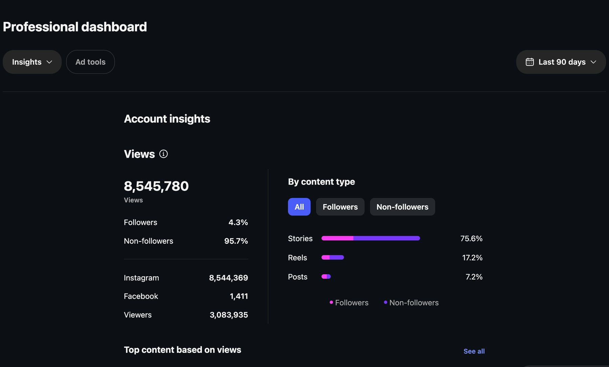
assets/ig-insights.jpgInstagram Insights
Akun @flexyum.sby, 90 hari terakhir (per 23 Nov 2026): 8,55 juta views, 95,7% dari non-followers.
Siap pakai. Sidebar sudah dibuang.
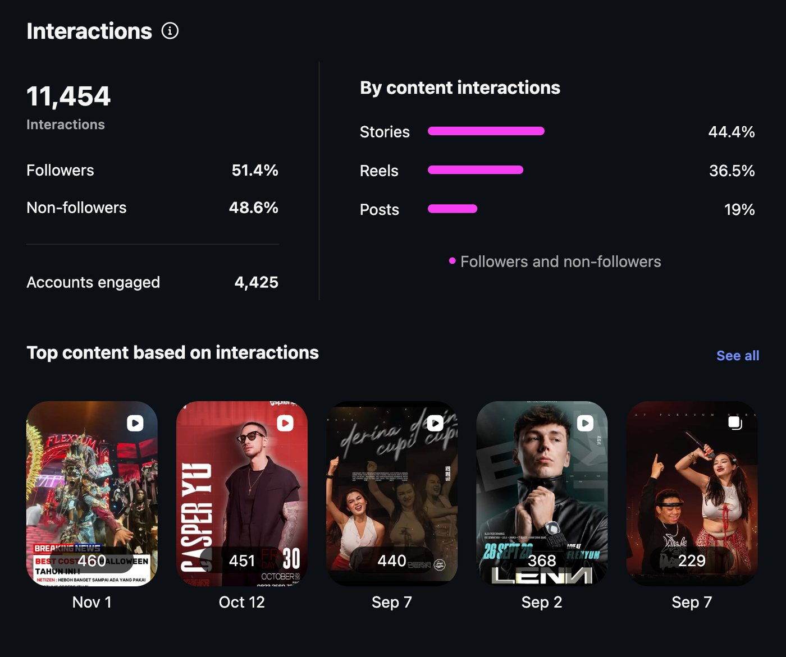
assets/ig-interaksi.jpgInteractions
90 hari terakhir (per 23 Nov 2026): 11.454 interactions dari 4.425 akun, beserta konten teratas.
Siap pakai.
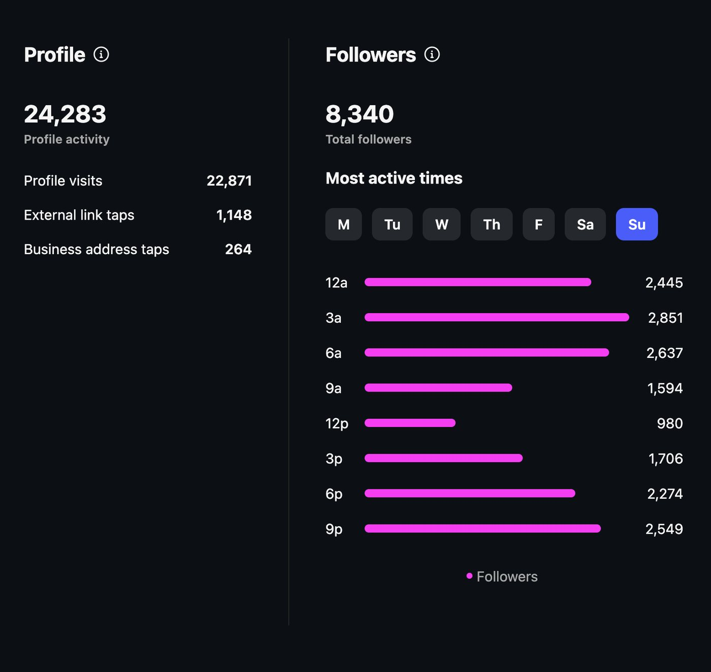
assets/ig-profil.jpgProfil dan followers
Per 23 Nov 2026: 8.340 followers, 22.871 kunjungan profil, 1.148 ketukan tautan, 264 ketukan alamat bisnis.
Siap pakai. Angka 8.340 lebih rendah dari 8.566 (akhir Sep), dan itu sudah dijelaskan di halaman.
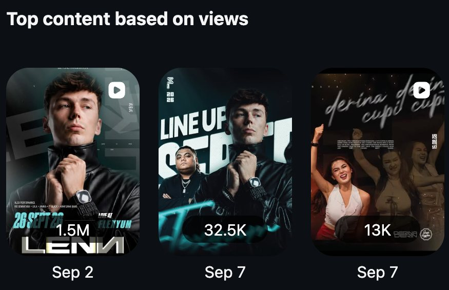
assets/konten-terbaik.jpgKonten dengan views tertinggi
Tiga konten teratas dalam 90 hari. Karya tim kreatif, diarahkan oleh saya. Sebagian views kemungkinan berasal dari iklan (ada campaign awareness LENN 26 Sept).
Potongan hanya tiga konten pertama. Konten story 28 Agu yang memuat wajah sengaja tidak dimasukkan.
Meta Ads
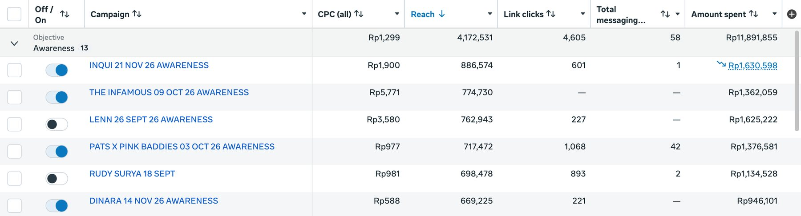
assets/ads-awareness.jpgCampaign awareness
Rentang Maksimum sampai 23 Nov 2026. Campaign yang masih aktif nilainya masih bertambah, jadi bisa lebih besar dari angka laporan Oktober.
Nama akun iklan, URL, dan tab browser sudah dibuang.
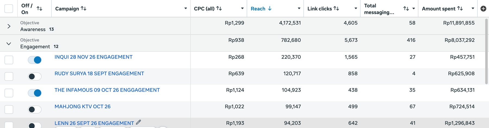
assets/ads-engagement.jpgCampaign engagement
12 campaign engagement dengan CPC rata-rata Rp 938, sampai 23 Nov 2026.
Nama akun iklan, URL, dan tab browser sudah dibuang.
Laporan yang saya susun
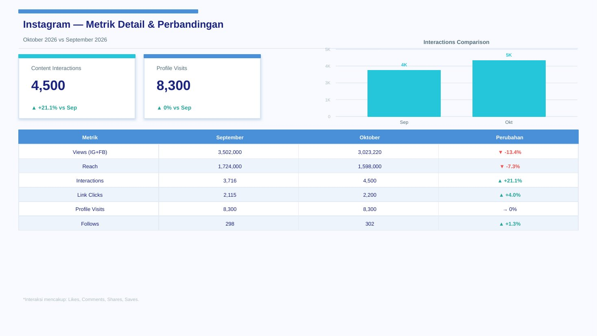
assets/laporan-instagram.jpgLaporan Instagram, Oktober 2026
Perbandingan Oktober dengan September: views, reach, interactions, link clicks, dan follows.
Slide diekspor dari file laporan. Tidak ada omzet atau data tamu.
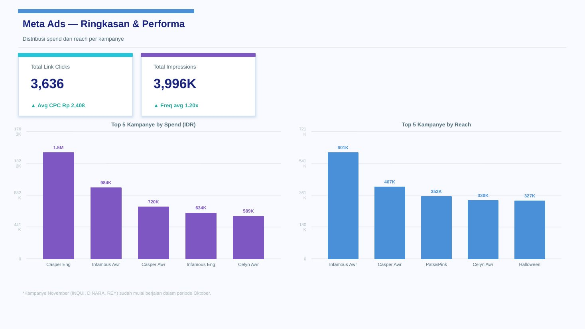
assets/laporan-ads.jpgLaporan Meta Ads, Oktober 2026
Link clicks, impressions, dan lima campaign teratas berdasarkan spend dan reach.
Slide diekspor dari file laporan. Tidak ada omzet atau data tamu.
 assets/surat-referensi.jpg
assets/surat-referensi.jpgSurat referensi atasan
Surat keterangan kerja atau testimoni tertulis dari manajemen Flexyum.
Belum ada. Ajukan ke GM atau HRD. Kartu ini tersembunyi sampai gambarnya ada.
TikTok
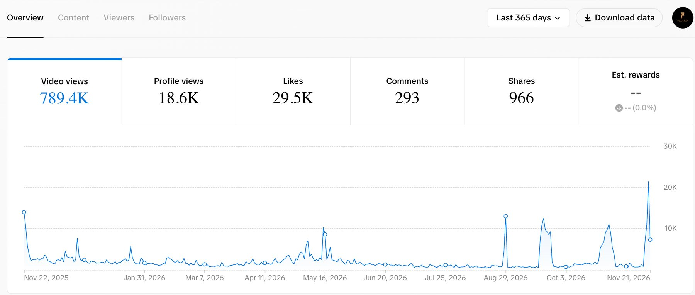
assets/tiktok-analytics.jpgRingkasan TikTok
365 hari terakhir (22 Nov 2025 sampai 21 Nov 2026): 789,4 rb video views dan 29,5 rb likes.
Tab browser sudah dibuang.
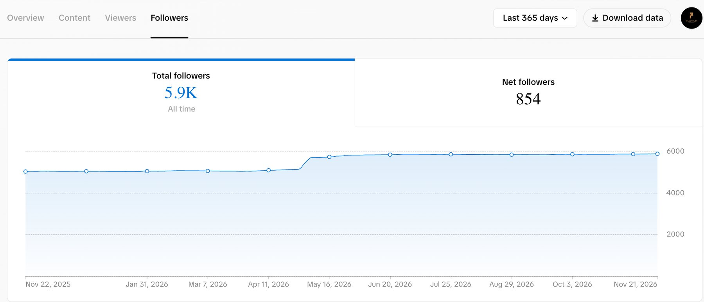
assets/tiktok-followers.jpgFollowers TikTok
5,9 rb total followers dan net +854 dalam 365 hari. Grafik naik tajam sekitar Mei 2026.
Grafik gender sengaja tidak ditampilkan.
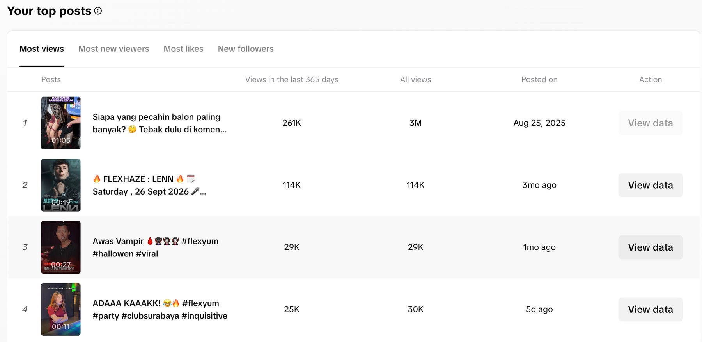
assets/tiktok-konten.jpgKonten teratas TikTok
Video teratas (3 juta views total) diunggah Agustus 2025, jadi sebagian views di 2026 berasal dari video lama.
Siap pakai.
Kehadiran publik
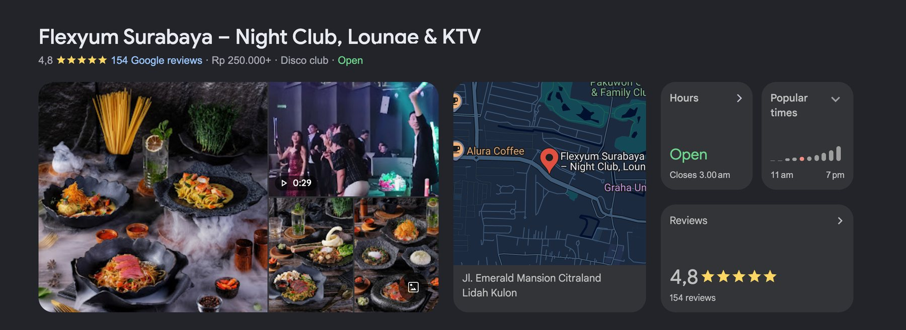
assets/maps-rating.jpgRating Google Maps
4,8 dari 154 ulasan, per 23 November 2026.
Teks admin profil sudah dihapus dari gambar.
Yang tidak saya tampilkan
Demi privasi dan kerahasiaan perusahaan, bukti di sini tidak memuat data tamu atau member (nama, nomor HP, CRM), data pembayaran, fee artis, identitas dan jam lembur individual anggota tim, maupun percakapan internal.